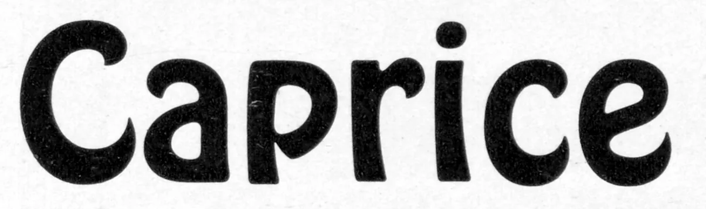

American Type Revival
ATR is an independent type foundry dedicated to making accessible, historically accurate revivals of late 19th and early 20th century American typefaces.
The history of type design spans hundreds of years. In that time it has constantly been changing and developing, both as a technology and art form. However, for most of its history these changes have been mostly refinements and improvements on the same underlying technology. The printing presses used to produce books and newspapers in the 1920s would have been impressive in their industrial scale and precision to someone like Johannes Gutenberg, but the underlying technology would still be recognizable.
That all began to change in the 20th century, as fundamentally new technologies, such as phototypesetting and computers radically redefined what was possible when it came to printed text. These technologies have expanded the possibilities of type setting, and made publication accessible to millions of people, but they have also permanently ruptured the history, development, and refinement of movable type. We are no longer iterating on and improving upon a tradition that dates back hundreds of years, we are working with a new and different medium.
I am a digital font designer. I grew up with these technologies. I love the power of this new technology, and I love how democratic and accessible it is. Anyone with a computer and an internet connection can make digital fonts. The world of type design is so much more expressive, inclusive, and exciting than it was a hundred years ago. However, there is something to be said about the typefaces made and sold in the late 19th and early 20th centuries. Those fonts represent the result of hundreds of years of the refinement and honing of a very specific craft. They are marvelous and beautiful in a way that few digital fonts today fully capture or replicate.
American Type Revival is an attempt to digitize these historical typefaces in a way that honors and celebrates their legacy as the final result of centuries of refinement, as the end of an era. It is as much an historical archive as it is a font foundry.
❧
ATR aims to make fonts that are accessible.
American Type Revival’s business model is unique. The goal is to make the font library available to as many people possible, both to use as tools of graphic design, but also as objects of study and historical documentation. This is only truly possible if the catalog is made free and public domain.
However, the amount of skill, time, and expertise needed to build a high quality digital font, especially one that prioritizes historical accuracy, is immense. Building out a robust catalog is untenable without serious financial investment.
Therefore, ATR uses a crowd-funding model.
The goal is to raise enough money to cover the cost of developing the font. Completed fonts on the American Type Revival website each have a public tally, showing how much the font cost to develop, and how much money has been raised through font sales so far. Once the amount of money raised reaches the cost of developing the font, it becomes free and public domain. Until that point is reached, the font costs money to download and use, priced similarly to fonts on other platforms. The more popular and in-demand a font is, the more quickly it becomes free.
This also means that fonts which have already met their funding goal can be download today for free. This model ensures that the ATR catalog is made accessible to as many people as possible, while remaining sustainable.
❧
ATR prioritizes historical accuracy.
It would probably not occur to most people that a font like Cooper Black at one point had a non-bold counterpoint, or that a font like Hobo was originally released with Light version. This is because despite being massively popular fonts, practically household names for graphic designers, parts of the original font families never made the leap from metal type to computers. The way people learn about these fonts is though using them, and seeing them used. Unless you cross reference hundred-year-old type catalogs, you wouldn’t realize that the picture painted by digital font marketplaces is often wrong or incomplete.
For the fonts that do get digitized, the digital versions are often very poor quality representations of the metal type they’re based on. Early into the era of digital fonts many large foundries worked to quickly make their catalog available digitally, but the people doing this work had to prioritize quantity over quality, were often working with poor quality or incomplete source material, and were using tools that were state-of-the-art in the early 90s, but today would be seen as crude. The result is fonts that, if you squint, look like their pre-digital counterparts, but upon closer inspection are clearly rough approximations.

Here is a photocopy of Hobo as seen in a historical type catalog.

Here is a commonly used Hobo digitization that was made in the 90s.

Here is the version of Hobo made by American Type Revival.
At first blush all three appear to be the same font. But upon closer inspection we can see many of the nuances of the original are lost in the 90s digitization. In the original the top of the p
appears flat enough that we could imagine placing a ball on it and not have it roll off. However in the 90s version the slope is much steeper much faster. We can also see the curve of the r
is a lot sharper. In general letters appear lumpier in the 90s version.
This isn’t necessarily malicious. Most designers in the 90s were doing the best they could, with the tools and resources they had. But today with better tools, resources, and techniques, digital fonts can more faithfully capture the original metal type version. This is hopefully made clear by the ATR version of Hobo.
❧
What we lose
A missing light version of a font, or a lumpy r
are both small issues. But small issues that go unaddressed and unacknowledged compound to create big issues down the line. This is especially true when it comes to type design.
Take for instance what happened in the case of Cooper Black. There’s a reason I keep bringing that font up. The Cooper font family was first released over a hundred years ago with both a regular, non bold version, and Cooper Black which is the bolder, more popular, enduring version.
For a variety of reasons (almost certainly cost-cutting) the regular version stopped getting included in type catalogs. This led people to forgot that there ever was a regular version to begin with. But now there’s a very obvious hole in the typographic catalog. That hole gets plugged by someone who created a brand-new, regular version of Cooper, unaware that they’re reinventing the wheel. Now we have a complete family, but the regular version is more boring and arguably lower quality that the black version. Somebody else notices and goes about trying to fix and harmonize the regular version. You can read more about the entire situation here.
Decades ago someone decided it wasn’t worth the effort or expense to include the regular version of Cooper. Not only has that decision caused a tremendous amount of unnecessarily work, trying to invent a font that already exists, it created a ton of misinformation. Some font foundries are claiming there never was a regular version of Cooper, while others are misidentifying the 80s version as the original.